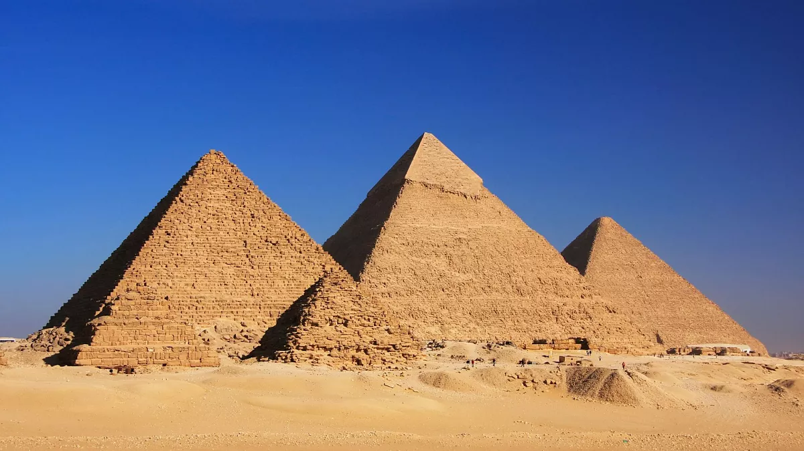
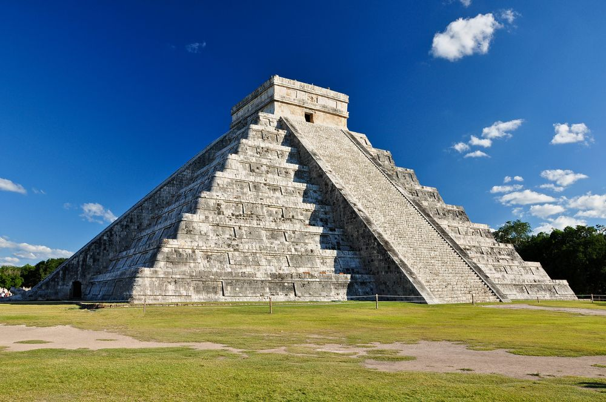

I have been fortunate to travel to several amazing places around the world, but my top three destinations stand out for their unique experiences and cultural richness. Egypt excited me with its timeless attractions, such as the Pyramids of Giza and the Nile River, not to mention the amazing temples of Luxor that show you how artistic the ancient Egyptians were. In Germany, I was attracted to the vibrant energy of Berlin, the beauty of Neuschwanstein Castle, and the atmosphere of Oktoberfest in Munich, which showcases the country's festive spirit. Mexico offered a different and more nightlife-focused vacation when staying in Cancun. But other destinations like Chichen Itza and Coba were good palette cleansers when I was looking for more historical sites.
| Egypt | Germany | Mexico |
|---|---|---|
| Great Pyramids of Giza | Berlin | Cancun |
| Temples of Luxor | Neuschwanstein Castle | Chichen Itza |
| Nile River | Oktoberfest | Coba |
|  | |
 |